FF
Funky Franky
Współtwórca beatów, muzyk sesyjny, perkusista, sporadycznie wokalista, członek kilku zespołów muzycznych, prowadzący show śniadaniowe.


Skład
Współtwórca beatów, muzyk sesyjny, perkusista, sporadycznie wokalista, członek kilku zespołów muzycznych, prowadzący show śniadaniowe.
Artysta, producent, wokalista, autor tekstów, model, designer, profesjonalny gracz pokerowy oraz półprofesjonalny kierowca rajdowy.
Program śniadaniowy obejmujący wydarzenia z całego świata, recenzje muzyczne, wywiady z wyjątkowymi gośćmi, wyzwania kulinarne, relacje z życia oraz przemyślenia prowadzących.
Laureat do nagrody złotego rondelka w kategorii najlepszy program śniadaniowy w 2025 roku. Najpopularniejsze Show śniadaniowe, zbierające miliony fanów przed ekranami codziennie z ranka.
Kontakt
Chcesz nas na swoim wydarzeniu? Masz pytanie? Śmiało, odezwij się.
Kraków, Polska
Jewish Jacob — koncerty, kolaboracje
manager@pocketjokers.pl
Sociale
Znajdź nas w sieci
Kulisy, nowe kawałki i zapowiedzi — wszystko najpierw ląduje tam.